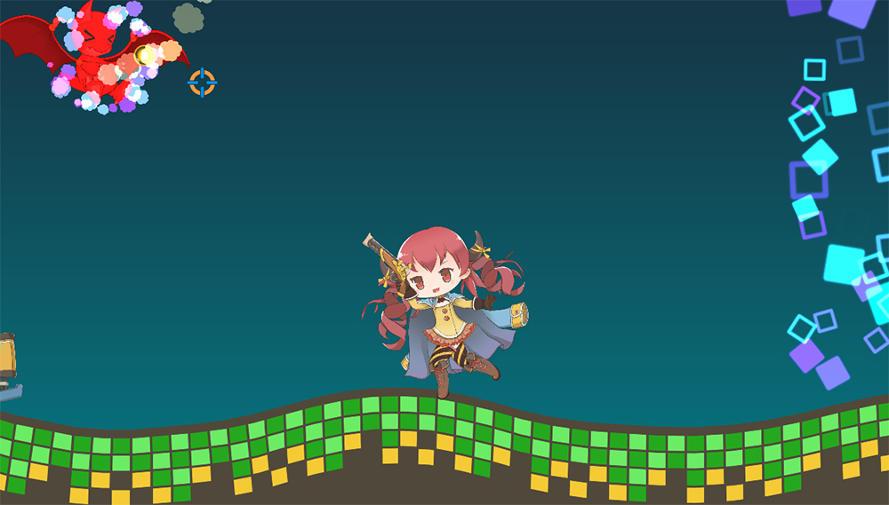

AnyPortrait > Manual > 2-Sided rendering of the mesh
2-Sided rendering of the mesh
1.0.4
Most of the 3D rendering engines render only the front side by default.
Likewise, the Unity engine does not render the back side by default, which is the same with AnyPortrait.
However, you may need to render both front and back.
This page covers examples and solutions that require two-sided rendering.

The 7th demo scene has a pirate girl character.
In the "Run" animation of this character, you can see that the X scale value of the right leg bone is -1.
Since the bone is inverted, the mesh should also appear naturally reversed on the X axis.

However, if you check in the game scene, you will see the right leg disappear when the character takes a motion that runs according to the "Run" animation.
This is because the mesh is inverted to the X axis and the back side is rendered rather than the front side.
So in this case, the right leg needs to always be rendered both on the front and on the back.

A way to make both sides of the mesh always render.
(1) Select the mesh group.
(2) Select the Setting tab.
(3) Select the target mesh.
(4) Check 2-Sides in the mesh settings.

Now you can see that it is rendering normally.
Cases that require 2-sided rendering, and Points to note
Basically, when a part of the mesh is inverted by Morph, Rigging, or Physics modifiers, two-sided rendering is required.
However, if you directly invert the size of the mesh with Transform, you do not have to do 2-sided rendering.
Setting 2-sided rendering can be a bit slower because it renders vertices twice.
If the customized Shader is set to "Cull Off", it can be rendered a total of four times.
Alpha calculations may not be performed properly at this time.
Note.
An option has been added in v1.2.5 to allow rigged meshes to render properly without setting them as 2-sided meshes even when the scale is inverted.
This option is not applicable in all cases, so it is recommended to read the pages below along with the 2-sided mesh feature introduced on this page.
- Reversed scale of the Rigged Mesh